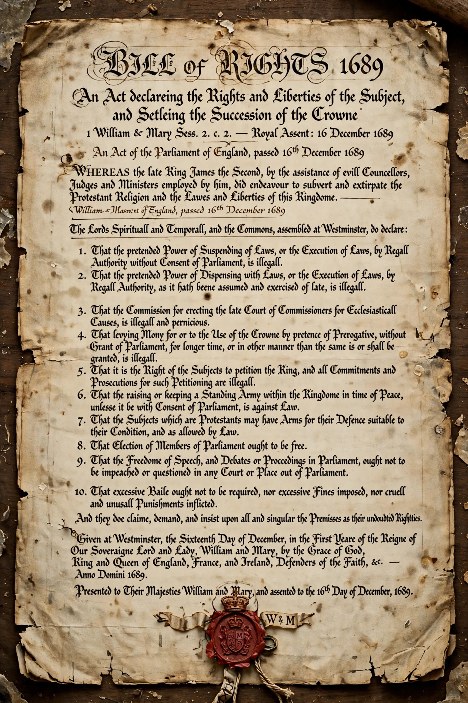

The Bill of Rights 1689 (1 Will & Mary Sess 2 c 2), formally an Act Declaring the Rights and Liberties of the Subject and Settling the Succession of the Crown, is a landmark statute of the Parliament of England that set out certain basic civil rights and clarified who would be next to inherit the Crown. It was presented to William III and Mary II in February 1689 as the Declaration of Right, following the Glorious Revolution that deposed James II, and was enacted into law in December 1689. Together with the Act of Settlement 1701, it remains a foundational document of the uncodified constitution of the United Kingdom and influenced bills of rights in many other countries, including the United States.
James II's attempts to rule without Parliament, maintain a standing army, suspend laws by royal prerogative, and promote Roman Catholics to office provoked the Revolution of 1688, in which William of Orange invaded at the invitation of leading English politicians. James fled to France, and the Convention Parliament of 1689 declared that he had abdicated. Before William and Mary accepted the crown, Parliament presented them with the Declaration of Right, listing James's abuses and the rights claimed for subjects.
The Act declared illegal or guaranteed, among other things:
The Act also settled the succession on Mary, then Anne, and excluded Roman Catholics and those married to them from the throne — a bar on Catholic succession modified only by the Succession to the Crown Act 2013, which ended the disqualification arising from marriage to a Catholic.
The Bill of Rights 1689 was a direct model for provisions of the Virginia Declaration of Rights (1776) and the United States Bill of Rights: its protections on petition, arms, speech in the legislature, bail, fines and punishments reappear in the First, Second and Eighth Amendments and in the Speech or Debate Clause. It also forms part of the received law of Commonwealth countries including Canada, Australia and New Zealand.
From Wikipedia, the free encyclopedia.